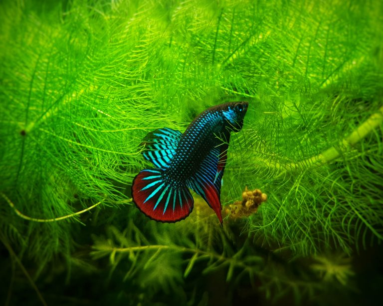

Ikan Cupang
Cupang, ikan laga, atau ikan adu siam (Betta sp.) adalah ikan air
tawar yang habitat asalnya adalah beberapa negara di Asia
Tenggara, antara lain Thailand, Malaysia, Brunei Darussalam,
Singapura, Vietnam, dan Indonesia. Ikan ini mempunyai bentuk dan
karakter yang unik dan cenderung agresif dalam mempertahankan
wilayahnya.
Morfologi
-
Umumnya ikan cupang memiliki bentuk tubuh yang ramping serta
memiliki ukuran yang relatif kecil, yaitu hanya sekitar
6-7 cm
saja.
-
Ikan cupang memiliki sisik yang halus dan mengkilat. Dimana sisik
dari ikan ini memiliki bentuk persegi panjang berukuran
0,2-0,3 mm
bahkan bisa lebih kecil tergantung dengan ukuran tubuh serta
varietasnya.
-
Terdapat dua tangkai kecil berukuran
0,6-1 cm pada bagian depan dengan warna
kekuningan atau kemerahan.
-
Ikan cupang tergolong memiliki banyak sekali jenis dan juga
varietes, sehingga ikan ini memiliki warna yang sangat beragam
seperti hitam pekat, merah pekat, kuning, kebiruan, serta warna
indah lainnya.
-
Ikan cupang sendiri merupakan ikan yang memiliki banyak bentuk
(Polymorphisme) seperti ekor bertipe setengah bulan, ekor
mahhkota, ekor pendek, serta ekor lilin.
Habitat

Ikan Cupang biasanya ditemukan di perairan yang tenang seperti
rawa-rawa, kolam, dan sungai yang memiliki vegetasi air, seperti
tumbuhan air dan akar terendam. Mereka lebih memilih habitat yang
memiliki air hangat dan sedikit arus. Habitat ikan Cupang sering
kali memiliki vegetasi air yang lebat, seperti eceng gondok,
tanaman air, dan akar-akar tumbuhan yang menjuntai ke dalam air.
Vegetasi ini memberikan tempat berlindung dan menciptakan
zona-zona dengan intensitas cahaya yang berbeda di dalam perairan.
Di beberapa habitat, ikan Cupang hidup di perairan dengan dasar
lumpur yang berlumpur atau berpasir. Mereka dapat mencari makanan
dan mencari tempat bertelur di antara lapisan tanah tersebut.
Reproduksi
Proses pemijahan ikan cupang berlangsung dengan cara betina
mengeluarkan telur-telurnya dan jantan membuahi dan memunguti
telur-telur serta meletakkannya didalam sarang busa. Setiap ikan
cupang dapat menghasilkan rata-rata telur sekitar
400-500 butir
dalam satu kali proses pemijahan. Cupang jantan akan menjaga
sarang, merawat telur, dan larva yang menetas sekitar dua hari
kemudian. Pada habitat aslinya, beberapa jenis ikan cupang ditemui
menngerami telurnya di dalam mulut (Mouthbreeder). Dalam satu
periode pemijahan biasanya anak cupang hias yang hidup mencapai
60% betina dan 40% jantan.
Padahal cupang hias yang laku dipasaran hanya yang berjenis
kelamin jantan, kecuali untuk tujuan sebagai induk betina.
Pakan
Ikan cupang pada umumnya menyukai jenis makanan yang bergerak,
makanan harus tersedia sejak telur cupang menetas. Oleh karena itu,
kebanyakan pembudidaya ikan cupang terlebih dahulu melakukan kultur
pakan alami sebelum memijahkan ikan cupang.
Artemia
Cacing Darah
Cacing Sutra
Infusoria
Jentik Nyamuk
Kutu Air
Paramecium
Vinegar Eels
Jenis
Giant